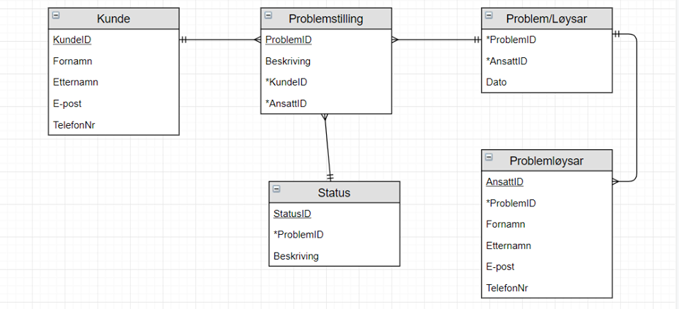

Ulike behov for vern
Tre hovudpunkt når det handlar om informasjonstryggleik er konfidensialitet, integritet og tilgang. Konfidensialitet handlar om informasjon. Intigritet er å halde kvaliteten på informasjonen oppe, og tilgang handlar om å ha den, når du trenge den. Noko som er viktig er å gi verdiane våre vern mot forskjellige typar truslar. Ulike informasjon vil ha forskjellige vernebehov.
Kven må beskytte seg?
Informasjonsverdiane står ikkje aleine. Dei som er ansvarleg, må verne. Det kan vere eit sårbar punkt om verdiane blir utsette for noko. For vi er ikkje alltid klar over kva verdiar vi faktisk har. I Noreg har vi eit system der den norske staten her eit overordna ansvar. Dette er for å verne om dei systema og funksjonane som er avhengig av å fungere. Energiforsyning og elektronisk kommunikasjon er eit av dei to viktigaste infrastruktur vi har. Ved vern passer det å ha tett samarbeid med eigaren. Vernetiltak er eit godt ord når ein skal beskytte seg. Da er det avhengig å vere klar over kva verdiar ein skal verne.
Døme på databasemodell:
